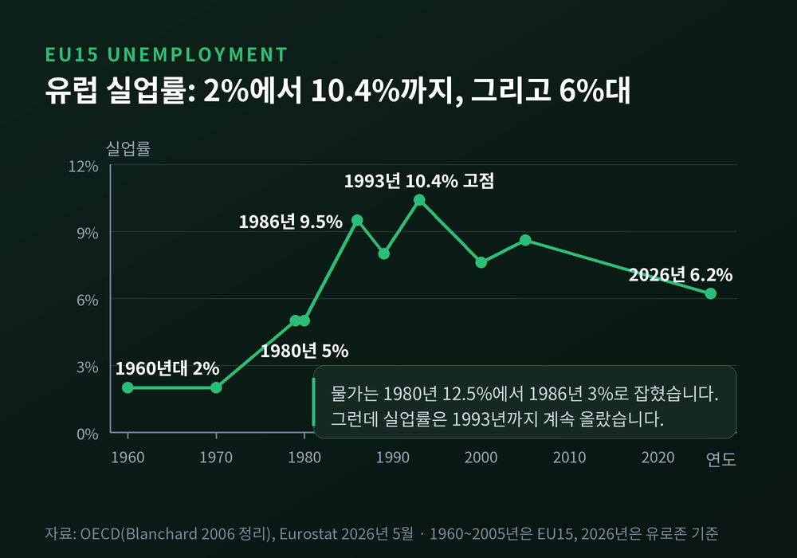
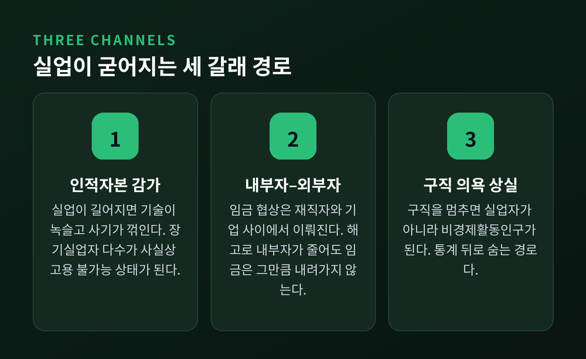
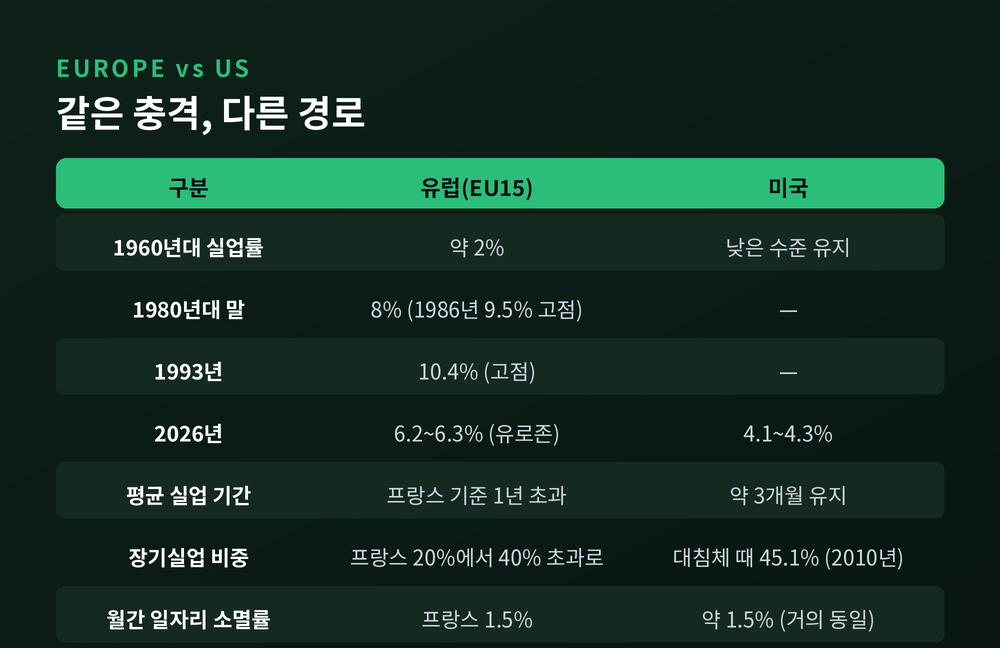
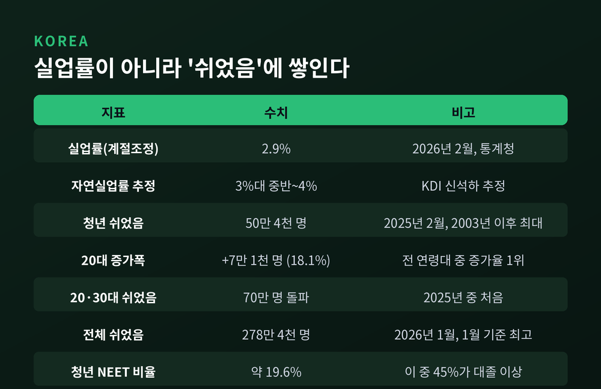

실업의 이력현상, 불황이 끝나도 실업률이 제자리로 돌아오지 않는 이유

이번 글에서는 실업의 이력현상, 이른바 히스테리시스를 정리해 보겠습니다. 경기가 회복됐는데도 실업률만 예전 자리로 돌아오지 않는 현상을 다룹니다. 자연실업률의 개념부터 1980년대 유럽의 실제 수치, 그리고 한국의 지표까지 순서대로 살펴보겠습니다.
자연실업률과 NAIRU는 무엇을 가리키는 말인가
실업률에는 경기와 무관하게 늘 남아 있는 부분이 있습니다. 이 부분을 자연실업률이라 부릅니다.
미국 의회예산처와 세인트루이스 연준의 공식 정의는 간명합니다. "총수요 변동을 제외한 모든 요인에서 발생하는 실업률"입니다. 이직 과정의 마찰, 산업 구조의 변화, 기술 불일치 같은 것들이 여기에 들어갑니다.
연준은 2021년 7월 보고서부터 이 통계 시리즈의 이름을 아예 '비순환적 실업률(NROU)'로 바꿨습니다. '자연'이라는 말이 주는 어감을 덜어낸 셈입니다.
같은 개념을 물가 쪽에서 부르는 이름이 NAIRU입니다. 인플레이션을 가속시키지도, 낮추지도 않는 실업률을 뜻합니다. 실무에서는 두 용어를 사실상 같은 것으로 다룹니다.
수치로 보면 이렇습니다. 미국의 비순환적 실업률은 2025년 4분기 기준 4.40%입니다. 실제 실업률은 2026년 5월 4.3%, 7월 4.1%였습니다. CBO는 2026년 실업률을 4.6%, 2028년에는 4.4%로 전망합니다.
즉 미국은 지금 자연실업률 근방에 머물러 있습니다.
여기까지는 교과서의 이야기입니다. 문제는 이 '자연'스러운 수준이 정말 고정된 값이냐는 것입니다.
1986년, 두 경제학자가 던진 질문
1986년 6월 올리비에 블랑샤르와 로런스 서머스가 NBER 워킹페이퍼 1950번을 냅니다. 제목은 「이력현상과 유럽 실업 문제」였습니다.
당시 유럽의 상황은 이랬습니다. EU15 평균 실업률이 1960년대에는 약 2%였습니다. 1970년대 말 5%로 올라섰고, 1980년 5%에서 1980년대 말 8%까지 계속 올랐습니다. 1986년에는 9.5%를 찍었습니다.
두 사람의 진단은 단호했습니다. "충격이 실업에 미치는 효과가 기존 이론이 도저히 설명할 수 없을 만큼 지속적"이라는 것이었습니다.
그리고 설명을 내놓습니다. 임금 협상은 이미 고용된 사람(내부자)과 기업 사이에서 이뤄지고, 실업자(외부자)는 협상 테이블에 없습니다. 노조가 재직 조합원의 고용만 신경 쓴다면 고용은 랜덤워크를 따르게 됩니다. 되돌아갈 기준점 자체가 사라지는 것입니다.
블랑샤르는 이 상태를 이렇게 표현했습니다. "실업은 특정한 값으로 돌아가지 않고, 대신 경제가 겪은 충격의 역사 전체에 의해 결정된다."

실업이 굳어지는 세 갈래 경로
이력현상은 추상적인 개념이 아닙니다. 세 가지 구체적인 통로를 지납니다.
첫째, 인적자본 감가입니다. 실업 기간이 길어지면 기술이 녹슬고 사기가 꺾입니다. 레이어드와 니켈은 1987년에 이 경로를 정식화했습니다. 장기실업자 상당수가 "사실상 고용 불가능한" 상태가 된다는 것입니다. 그러면 같은 실업률이 임금에 가하는 하방 압력도 약해집니다.
둘째, 내부자–외부자 구도입니다. 부정적 충격으로 해고가 일어나면 내부자 집단이 줄어듭니다. 그런데 임금은 그만큼 내려가지 않습니다. 줄어든 내부자들이 오히려 1인당 교섭력을 유지하기 때문입니다. 충격을 되돌릴 임금 조정이 일어나지 않으니, 균형 실업률 자체가 올라간 자리에 머뭅니다.
셋째, 구직 의욕 상실입니다. 이 경로는 통계 뒤에 숨습니다. 구직활동을 멈추면 실업자가 아니라 비경제활동인구로 분류되기 때문입니다. 프랑스에서 55~59세 남성 경제활동참가율은 1960년대 말 85%에서 1980년대 중반 70% 아래로 떨어졌습니다. 보조금이 붙은 조기퇴직 프로그램의 결과였습니다.

유럽과 미국, 같은 충격 다른 경로
1970년대의 충격 자체는 양쪽이 비슷하게 겪었습니다. 1980년대 초 실질 유가는 1970년대 초의 약 네 배였습니다. 유럽의 기술진보율은 1950~60년대 5% 이상에서 1970년대 말 2%로 내려앉았습니다. 임금 상승 여력이 연 3%포인트씩 증발한 셈입니다.
물가는 잡혔습니다. EU15 인플레이션은 1980년 12.5%에서 1986년 3%로 떨어졌습니다.
그런데 실업은 남았습니다. EU15 실업률은 1993년 10.4%로 고점을 찍고, 2000년에도 7.6%였습니다.
흥미로운 대목은 여기입니다. 일자리가 사라지는 속도 자체는 양쪽이 거의 같았습니다. 프랑스에서 매달 전체 일자리의 1.5%가 소멸하는데, 이는 미국과 거의 같은 비율입니다.
차이는 다른 데 있었습니다. 한 번 실업이 되면 얼마나 오래 머무느냐였습니다.
프랑스의 1년 이상 장기실업자 비중은 1960년대 말 20%에서 40% 이상으로 늘었습니다. 반면 미국의 평균 실업 기간은 줄곧 3개월 안팎을 유지했습니다.
미국이라고 안전지대는 아닙니다. 대침체 때 27주 이상 장기실업자는 2010년 2분기 670만 명, 전체 실업자의 45.1%까지 치솟았습니다. 1983년의 26%를 크게 웃도는 기록입니다.

그래서 이력현상은 사실인가
여기서 균형을 잡아야 합니다. 블랑샤르 본인이 2006년에 자신의 1986년 주장을 되짚었기 때문입니다.
그는 초기 형태를 "지나치게 강했고, 비판받은 것이 타당했다"고 썼습니다. 이유는 네 가지였습니다. 노동력이 늘면 고용도 실제로는 꽤 빠르게 따라 늘었고, 왜 하필 1970년대 이후 유럽에만 해당되는지 설명이 궁했습니다. 재직자도 언젠가 실업자가 될 수 있으니 노동시장 상태를 신경 쓰고, 기업은 실업자를 뽑겠다고 위협할 수 있습니다.
수정된 결론은 이렇습니다. 실업이 임금에 미치는 영향은 약할 수는 있어도 0은 아니며, 경제는 자연실업률로 돌아가기는 한다는 것입니다. 다만 아주 느리게 돌아갑니다.
용어로 정리하면 완전한 '이력현상'보다는 강한 '지속성'에 가깝습니다.
그럼에도 영구 손실의 증거는 계속 쌓였습니다. 블랑샤르·체루티·서머스는 2015년에 23개국 50년치 침체 122건을 조사했습니다. 결론은 "상당수가 더 낮은 산출, 심지어 더 낮은 성장률로 이어졌다"였습니다.
블랑샤르가 유럽 실업을 두고 남긴 문장도 기억할 만합니다. "여기서는 겸손이 필요하다."
수요 관리가 공급 능력을 바꾼다면
이력현상을 받아들이면 정책의 셈법이 달라집니다.
예전의 통념은 이랬습니다. 총수요 정책은 단기 경기만 다루고, 실업의 장기 수준은 노동시장 제도가 정한다. 지금은 다르게 봅니다. 수요 부족을 오래 방치하면 공급 능력 자체가 깎여 나간다는 쪽으로 무게가 옮겨갔습니다.
재닛 옐런은 2016년 10월 보스턴 연준 강연에서 이 논점을 정면으로 다뤘습니다. 그는 이력현상이라는 아이디어가 새로울 것 없다며, 1980년대 중반 유럽 노동시장 논의에서 이미 나왔다고 짚었습니다.
그리고 질문을 던집니다. 일시적으로 '고압 경제'를 운영해, 즉 튼튼한 총수요와 타이트한 노동시장을 만들어서 이 공급 측 손상을 되돌릴 수 있는가.
옐런이 제시한 통로는 두 가지였습니다. 매출이 늘면 기업이 설비에 투자해 생산능력이 커집니다. 노동시장이 빠듯하면 주변부에 머물던 사람들이 다시 들어오고, 이직이 늘어 일자리 매칭의 질도 좋아집니다.
다만 제도 쪽 처방은 생각보다 단순하지 않습니다. 니켈의 1997년 연구는 실업급여 지급 기간과 교섭 조정 정도로 국가 간 차이를 잘 설명했습니다. 그런데 국가와 시간 더미를 넣은 패널 분석에서는 어떤 노동시장 제도도 유의하지 않았습니다. 조세 쐐기가 가장 높은 나라 중 셋(핀란드·스웨덴·오스트리아)은 자연실업률이 오히려 낮습니다.
그래서 블랑샤르가 남긴 원칙은 이 한 문장으로 압축됩니다 — "본질적으로 중요한 것은 일자리가 아니라 노동자를 보호하는 것이다."
팬데믹은 이력현상을 반증했을까
가까운 사례로 검증해 볼 수 있습니다.
반증했다는 쪽의 근거는 뚜렷합니다. 미국 실업률은 2021년 4분기 4.2%로, 1년 전보다 2.6%포인트 낮아졌습니다. 구인 공고는 2021년 말 팬데믹 이전 대비 약 60% 높은 수준까지 올랐습니다. 노동시장 타이트니스는 2022년에 2를 기록했는데, 2차 대전 종전 이후 처음 있는 수치였습니다.
반대쪽 근거도 만만치 않습니다. 리치먼드 연준은 실업률이 빠르게 회복하는 동안 경제활동참가율은 2019년 수준 아래에 머물렀다고 지적합니다. 이력현상이 실업률이 아니라 참가율 안으로 숨어들었다는 해석이 가능합니다.
한 가지 더 남습니다. 이번에 회복이 빨랐던 이유가 정책 대응이 유례없이 크고 빨랐기 때문이라면, 이는 "이력현상이 없다"의 증거가 아니라 "이력현상을 막는 정책이 통했다"의 증거일 수 있습니다.
아직 결론이 난 논쟁은 아닙니다.
한국은 실업률이 아니라 '쉬었음'에 쌓입니다
한국 지표를 보면 이력현상 이야기가 남 얘기처럼 들립니다. 2026년 2월 계절조정 실업률은 2.9%였습니다. KDI 연구가 추정한 한국의 자연실업률은 3%대 중반에서 4% 사이입니다. 실제 실업률이 추정된 자연실업률보다 낮게 나오는 구간인 셈입니다.
그런데 다른 숫자를 보면 그림이 달라집니다.
2025년 2월 15~29세 '쉬었음' 인구는 50만 4천 명이었습니다. 2003년 1월 통계 작성 이후 최대치입니다. 20대만 보면 1년 사이 7만 1천 명, 18.1%가 늘어 전 연령대 중 증가율이 가장 높았습니다. 2025년 중에는 20·30대 '쉬었음'이 처음으로 70만 명을 넘었습니다.
2026년 1월에도 청년 '쉬었음'은 46만 9천 명, 전체 '쉬었음'은 278만 4천 명으로 1월 기준 역대 최고였습니다.
OECD 기준 한국의 청년 NEET 비율은 약 19.6%입니다. 그중 45%가 대졸 이상으로, OECD 평균 18%의 두 배를 훌쩍 넘습니다.
이 숫자들이 말하는 바는 분명합니다. 앞서 본 세 번째 경로, 구직 의욕 상실이 한국에서는 실업률 상승이 아니라 '쉬었음' 증가로 표출되고 있습니다. 실업률만 보면 보이지 않습니다.
인적자본 감가가 가장 비싼 집단, 즉 대졸 청년에게서 진행되고 있다는 점도 짚어야 합니다.
다만 한국에 실업 이력현상이 통계적으로 존재하는지에 대한 전국 단위의 합의된 실증 결과는 확인하지 못했습니다. 지표의 구조가 그렇게 나타날 수 있다는 정도로 읽는 편이 안전합니다.

정리하면 이렇습니다.
자연실업률은 못 박힌 상수가 아닙니다. 불황이 길어지면 그 수준 자체가 위로 밀려 올라갈 수 있습니다. 블랑샤르가 1986년에 내놓은 극단적 형태는 그 자신이 스무 해 뒤에 거둬들였습니다. 그러나 "충격이 남긴 자국은 생각보다 오래간다"는 핵심은 살아남았습니다.
숫자는 회복을 말하는데 사람은 돌아오지 않는 구간이 있습니다. 실업률이 낮다는 사실만으로 노동시장이 건강하다고 말하기 어려운 이유입니다.
경기가 좋아지면 실업도 저절로 풀리느냐고 물으신다면, 대체로 그렇지만 늦게 손대면 그만큼 자국이 남는다고 답하겠습니다.